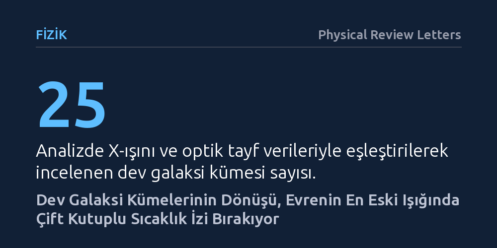

FIZIK · Physical Review Letters · 2026-10-14
Gökbilimciler, 25 dev galaksi kümesindeki gazın dönme hareketinin kozmik mikrodalga arka plan ışığında bıraktığı çift kutuplu izi tespit etti. Bulgular, evrenin en eski fosil ışığını kullanarak küme dinamiklerini incelemek için yeni bir gözlem penceresi açıyor.
Evrendeki en büyük kütleçekimsel yapıların gaz kütleleriyle birlikte döndüğünü ve bu karmaşık hareketlerin doğrudan evrenin fosil ışığı üzerinden haritalanabileceğini gösteriyor.

Galaksi kümeleri, yüzlerce hatta binlerce gökadayı ve bunların arasına dağılmış milyonlarca derece sıcaklıktaki plazma gazını barındıran, evrenin kütleçekimiyle bir arada tutulan en devasa yapılarıdır. Bu sistemler milyarlarca yıllık kütleçekimsel çarpışmalar ve birleşmelerle büyür. Ancak bu birleşmelerin ardından sistemin genel bir dönme hareketine sahip olup olmadığı ya da gazın küme içinde nasıl bir kinetik hareket sergilediği uzun süredir yanıt bekleyen bir soruydu.
Geleneksel teleskoplarla bu gaz hareketlerini doğrudan takip etmek neredeyse imkânsızdır; çünkü küme içi gaz son derece seyrek olduğundan uzayda neredeyse şeffaf kalır. Gökbilimciler bu nedenle gazın kendi yaydığı ışıktan ziyade, arkasından süzülüp bize ulaşan en eski ışığın üzerinde bıraktığı gölgeleri ve sapmaları incelemeyi seçiyor.
Araştırmacılar bu gizemi aydınlatmak için 'dönel kinematik Sunyaev-Zel’dovich' etkisini mercek altına aldı. Büyük Patlama'dan yaklaşık 380 bin yıl sonra serbest kalan kozmik mikrodalga arka plan fotonları uzayda ilerlerken, dönen bir galaksi kümesinin içindeki sıcak gazın serbest elektronlarıyla çarpışır. Kümenin bize doğru dönen tarafındaki gaz fotonlara hafifçe fazladan enerji aktarırken, bizden uzaklaşan taraf fotonların enerjisini düşürür. Bu durum mikrodalga haritasında bir tarafı sıcak, diğer tarafı soğuk bir sıcaklık kutuplanması (dipol) oluşturur.
Ekip, Sloan Dijital Gökyüzü Taraması verilerini kullanarak Güneş kütlesinin yaklaşık 10 trilyon katından ağır, düşük kırmızıya kayma aralığındaki 25 dev galaksi kümesini seçti. Küme üyesi galaksilerin hareketlerinden her bir kümenin açısal momentum ekseni hesaplandı ve ardından Planck uydusunun mikrodalga haritalarıyla örtüştürüldü. Geliştirilen yeni filtreleme yöntemleri sayesinde, bu çok zayıf dönme sinyali kozmik mikrodalga arka planın doğal dalgalanmalarından ve aletsel gürültüden başarıyla ayrıştırıldı.
Analizler sonucunda, incelenen 25 kümenin ortalamasında net bir dipol sinyali yakalandı. En kritik nokta ise tespit edilen bu sıcaklık farkının, kümelerin galaksiler üzerinden hesaplanan açısal momentum doğrultusuyla birebir hizalanmış olmasıydı. İstatistiki testler, görülen bu izin bir şans eseri veya rastlantısal gürültü olma ihtimalini yüzde 0,02 düzeyine (3,6 sigma) kadar düşürdü.
Ölçülen sinyalin büyüklüğü ve biçimi, günümüzün en gelişmiş hidrodinamik kozmoloji simülasyonlarının öngörüleriyle de niteliksel açıdan uyum sağladı. Bu durum, mikrodalga arka plan ışığında yakalanan etkinin gerçekten de küme içi gazın organize dönme hareketinden kaynaklandığı fikrini güçlendiriyor.
Bu gözlem, galaksi kümelerinin yalnızca durgun gaz yığınları olmadığını, içlerindeki gaz kütleleriyle birlikte ortak bir eksende döndüklerini gösteren ilk somut mikrodalga kanıtlarından biridir. Büyük ölçekli yapıların evriminde açısal momentumun nasıl paylaşıldığını ve küme içi gazın termal olmayan basınç dengesini anlamak, evrenin toplam madde yoğunluğunu hassas hesaplamak için büyük önem taşır.
Bununla birlikte, çalışmanın henüz 25 kümeyle sınırlı olması ve 3,6 sigmalık güven düzeyinin fizik standartlarında 'kesin keşif' eşiğinin (5 sigma) altında kalması, yöntemin daha geniş veri setleriyle sınanmasını gerektiriyor. Gelecekte devreye girecek yeni nesil yer ve uzay teleskopları, bu yöntemi kullanarak evrenin en büyük yapılarının dinamik iç yaşamını çok daha ayrıntılı haritalandırabilecek.